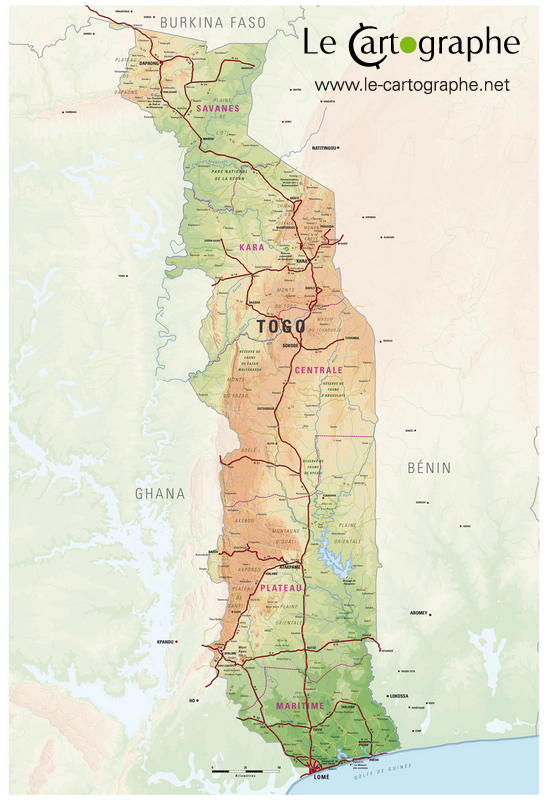

®
PRESENTATION DU TOGO

DESCRIPTION
Le Togo est un pays d'Afrique de l'Ouest situé dans le golfe de Guinée.
Il est connu pour ses plages bordées de palmiers et ses villages au sommet des collines.
La région du Koutammakou est habitée par le peuple des Batammariba, occupant des huttes
en argile traditionnelles ressemblant à des forteresses qui remontent au XVIIe siècle.
La capitale Lomé est dotée d'un bazar sur plusieurs étages appelé Grand Marché ainsi
que du Marché aux fétiches qui propose des remèdes et des talismans traditionnels en
rapport avec le culte vaudou.
PLACES À VISITER
1) la cascade de kpime
2) le chateau vial
3) la maison des exclaves
ANECDOTES
-
Première anecdote
J'ai eu l'honneur de visiter la cascade de kpime quatre ans plus tôt,
Un guide nous a conduit, ceux qui savent nager ont profité de la fraicheur inouie de l'eau de la cascade.
Les rochers et la verdure sont d'une beauté parfaite.
nous avons fait un pique nique sur place, ce fut un moment inoubliable.
La beauté du paysage, la belle verdure, la taille des rochers sont autant de détails bouleverssants, exhaltants,
et enchanteurs.
-
Deuxième anecdote
A deux occasions, j'ai visité le chateau vial et ce fut des occasions mémorables et très riches en émotions.
En plus d'etre un lieu historique, le chateau vial est un cadre magique, idyllique, et fort sensationnel.
-
Troisième anecdote
La maison des exclaves est un lieu historique bouleversant que j'ai visité à l'occasion d'une excursion associative.
Elle n'est pas loin de la mer. Heureusement, on y trouve plus aujourd'hui les exclaves.
On y vends des oeuvres d'arts de tous genres